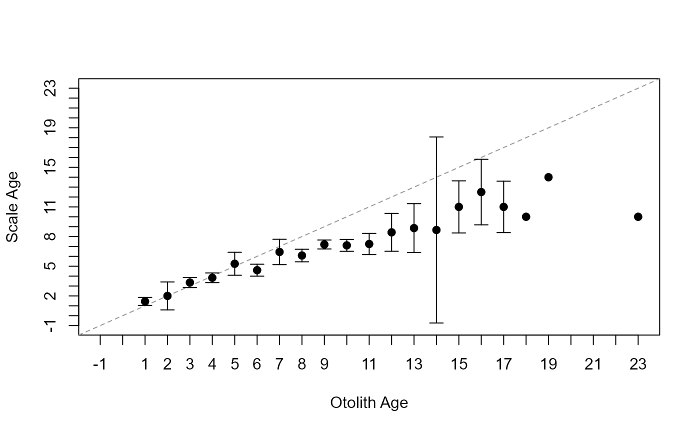
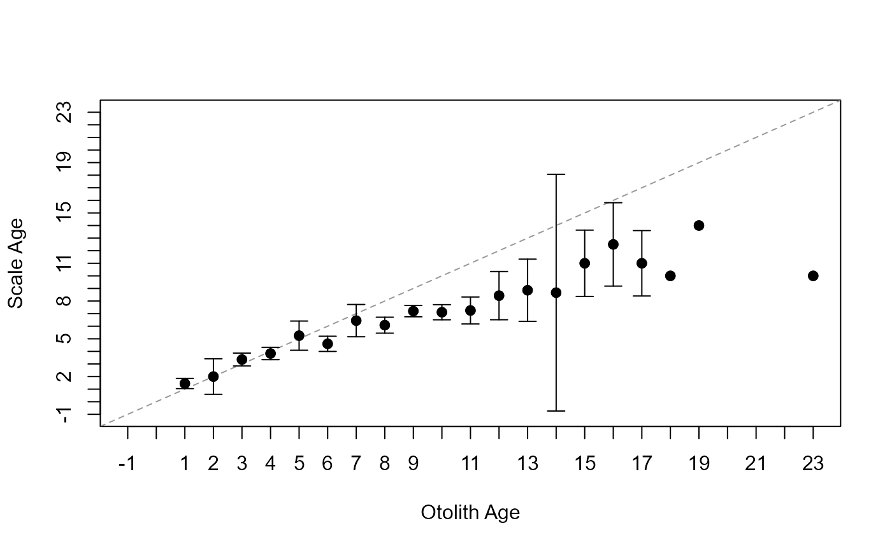

Constructs a traditional (e.g., like that described in Campana et al. (1995)) age-bias plot to visualize potential differences in paired age estimates. Ages may be from, for example, two readers of the same structure, one reader at two times, two structures (e.g., scales, spines, otoliths), or one structure and known ages.
Usage
plotAB(
x,
what = c("bias", "Campana", "numbers"),
xlab = x$ref.lab,
ylab = x$nref.lab,
xlim = NULL,
ylim = NULL,
yaxt = graphics::par("yaxt"),
xaxt = graphics::par("xaxt"),
col.agree = "gray60",
lwd.agree = lwd,
lty.agree = 2,
lwd = 1,
sfrac = 0,
pch.mean = 19,
pch.mean.sig = 21,
cex.mean = lwd,
col.CI = "black",
col.CIsig = "red",
lwd.CI = lwd,
sfrac.CI = sfrac,
show.n = FALSE,
nYpos = 1.03,
cex.n = 0.75,
cex.numbers = 0.75,
col.numbers = "black",
...
)Arguments
- x
An object of class
ageBias, usually a result fromageBias.- what
A string that indicates what type of plot to construct. See details.
- xlab, ylab
A string label for the x-axis (reference) or y-axis (non-reference) age estimates, respectively.
- xlim, ylim
A numeric vector of length 2 that contains the limits of the x-axis (reference ages) or y-axis (non-reference ages), respectively.
- xaxt, yaxt
A string which specifies the x- and y-axis types. Specifying “n” suppresses plotting of the axis. See
?par.- col.agree
A string or numeric for the color of the 1:1 or zero (if
difference=TRUE) reference line.- lwd.agree
A numeric for the line width of the 1:1 or zero (if
difference=TRUE) reference line.- lty.agree
A numeric for the line type of the 1:1 or zero (if
difference=TRUE) reference line.- lwd
A numeric that controls the separate ‘lwd’ argument (e.g.,
lwd.CIandlwd.range).- sfrac
A numeric that controls the separate ‘sfrac’ arguments (e.g.,
sfrac.CIandsfrac.range). SeesfracinplotCIof plotrix.- pch.mean
A numeric for the plotting character used for the mean values when the means are considered insignificant.
- pch.mean.sig
A numeric for the plotting character for the mean values when the means are considered significant.
- cex.mean
A character expansion value for the size of the mean symbol in
pch.meanandpch.mean.sig.- col.CI
A string or numeric for the color of confidence interval bars that are considered non-significant.
- col.CIsig
A string or numeric for the color of confidence interval bars that are considered significant.
- lwd.CI
A numeric for the line width of the confidence interval bars.
- sfrac.CI
A numeric for the size of the ends of the confidence interval bars. See
sfracinplotCIof plotrix.- show.n
A logical for whether the sample sizes for each level of the x-axis variable is shown (
=TRUE, default) or not (=FALSE).- nYpos
A numeric for the relative Y position of the sample size values when
show.n=TRUE. For example, ifnYpos=1.03then the sample size values will be centered at 3 percent above the top end of the y-axis.- cex.n
A character expansion value for the size of the sample size values.
- cex.numbers
A character expansion value for the size of the numbers plotted when
what="numbers"is used.- col.numbers
A string for the color of the numbers plotted when
what="numbers"is used.- ...
Additional arguments for methods.
Details
Two types of plots for visualizing differences between sets of two age estimates may be created. The reference ages are plotted on the x-axis and the nonreference ages are on the y-axis. The 1:1 (45 degree) agreement line is shown for comparative purposes. The default plot (using what="bias") was inspired by the age bias plot introduced by Campana et al. (1995). The default settings for this age bias plot show the mean and confidence interval for the nonreference ages at each of the reference ages. The level of confidence is controlled by sig.level= given in the original ageBias call (i.e., confidence level is 100*(1-sig.level)). Confidence intervals are only shown if the sample size is greater than the value in min.n.CI= (also from the original call to ageBias). Confidence intervals plotted in red with an open dot (by default; these can be changed with col.CIsig and pch.mean.sig, respectively) do not contain the reference age (see discussion of t-tests in ageBias). Sample sizes at each reference age are shown if show.n=TRUE. The position of the sample sizes is controlled with nYpos=, whereas their size is controlled with cex.n. Arguments may be used to nearly replicate the age bias plot as introduced by Campana et al. (1995) as shown in the examples.
The frequency of observations at each unique (x,y) coordinate are shown by using what="numbers" in plotAB. The size of the numbers is controlled with cex.numbers.
IFAR Chapter
4-Age Comparisons. This is most of the original functionality that was in plot in the book. See examples.
References
Campana, S.E., M.C. Annand, and J.I. McMillan. 1995. Graphical and statistical methods for determining the consistency of age determinations. Transactions of the American Fisheries Society 124:131-138. [Was (is?) available from http://www.bio.gc.ca/otoliths/documents/Campana%20et%20al%201995%20TAFS.pdf.]
See also
See ageBias and its plot method for what I consider a better age-bias plot; agePrecision for measures of precision between pairs of age estimates; and compare2 in fishmethods for similar functionality.
Author
Derek H. Ogle, DerekOgle51@gmail.com
Examples
# Must create ageBias object first
ab1 <- ageBias(scaleC~otolithC,data=WhitefishLC,
ref.lab="Otolith Age",nref.lab="Scale Age")
# Default plot
plotAB(ab1)
 # Very close to Campana et al. (2001)
plotAB(ab1,pch.mean.sig=19,col.CIsig="black",sfrac=0.01,
ylim=c(-1,23),xlim=c(-1,23))

# Show sample sizes (different position and size than default)
plotAB(ab1,show.n=TRUE,nYpos=0.02,cex.n=0.5)
# Very close to Campana et al. (2001)
plotAB(ab1,pch.mean.sig=19,col.CIsig="black",sfrac=0.01,
ylim=c(-1,23),xlim=c(-1,23))

# Show sample sizes (different position and size than default)
plotAB(ab1,show.n=TRUE,nYpos=0.02,cex.n=0.5)
 # Traditional numbers plot
plotAB(ab1,what="numbers")
# Traditional numbers plot
plotAB(ab1,what="numbers")